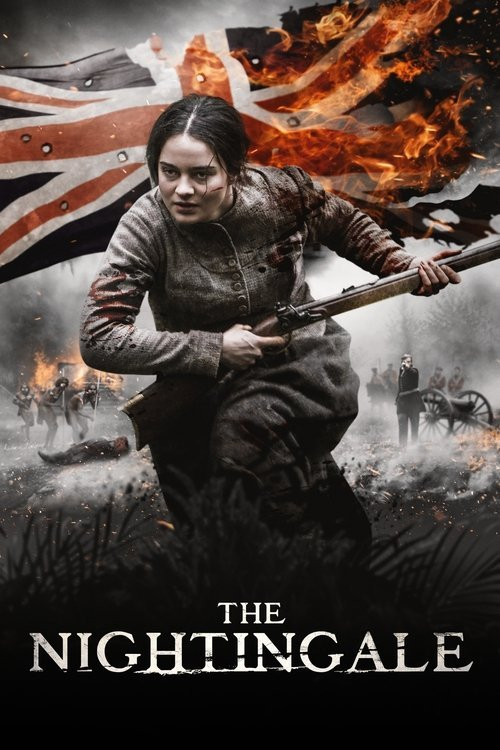

The Nightingale (2018)
Sinopsis Rápida
En la brutal Tasmania de 1825, una joven irlandesa busca venganza tras el asesinato de su familia a manos de soldados británicos, embarcandose en un viaje despiadado a través de un territorio implacable.
Sinopsis Detallada
The Nightingale es una visceral y desgarradora odisea de venganza ambientada en la Tasmania colonial. Tras el brutal asesinato de su marido e hijo por un grupo de soldados británicos, Clare, una joven irlandesa, se embarca en una peligrosa búsqueda de justicia. Acompañada por un rastreador aborigen, Billy, Clare se adentrará en el despiadado paisaje salvaje de Tasmania, confrontando la brutalidad del imperio británico y la compleja dinámica racial de la época. La película no rehúye la violencia gráfica, presentando una representación cruda y sin concesiones de la historia colonial australiana y el trauma de la violencia sistemática. La búsqueda de Clare no es solo por venganza, sino también por un cierre que le permita lidiar con su dolor inconmensurable.
¿Por qué tenés que verla?
- Una historia brutalmente honesta que no evita la violencia gráfica para mostrar las atrocidades del colonialismo.
- La dirección de Jennifer Kent es magistral, creando una atmósfera opresiva y visceral que te mantiene al borde del asiento.
- The Nightingale ha generado un importante debate sobre la representación de la violencia colonial y el trauma en el cine.
- Actuaciones excepcionales que transmiten la rabia, el dolor y la desesperación de los personajes.
Idea Extra
Análisis comparativo de la representación del colonialismo en The Nightingale con otras películas de temática similar.
{{CONTENIDO_RELACIONADO}}